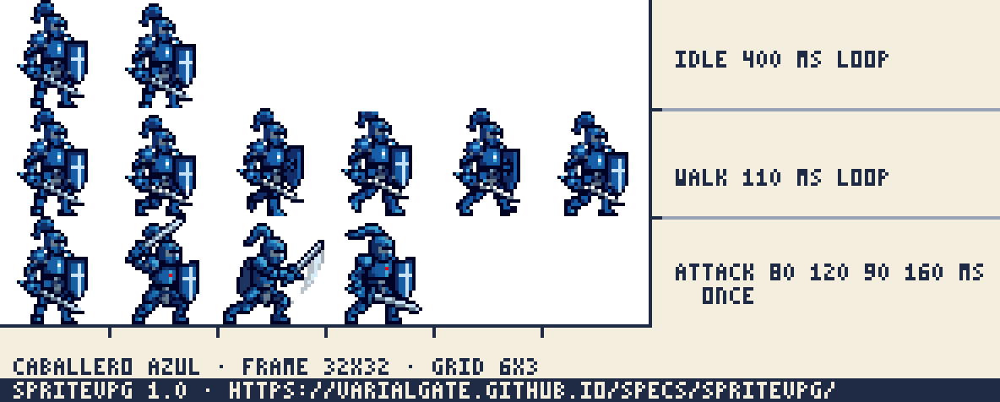

SPRITE VARIAL PIXEL GEN · 1.0
Una hoja de sprites que dice ella misma cómo se corta y cómo se anima: el sprite pattern. Los frames van limpios desde la esquina de arriba a la izquierda, una animación por fila; al lado de cada fila, su nombre y su ritmo; y abajo, el tamaño de frame y el enlace a la especificación.
Solo lo imprescindible, dibujado en la propia imagen: lo lee una persona, lo lee una IA con solo mirarlo y lo lee un programa de forma exacta.

La zona de frames, el texto, los rótulos de fila, el pie, cómo leerlo y cómo importarlo en un motor.
Un caballero con tres animaciones: reposo, andar y ataque.
La fuente de píxeles de los márgenes: mayúsculas, cifras, tildes y signos en celdas de 4×7, sin suavizado. Licencia SIL OFL 1.1.
Enseña a un asistente a entender, recortar y generar sprite patterns, con una herramienta en Python.
Una hoja que lleva dibujado lo imprescindible: los metadatos se pierden y una IA no los ve.
El ejemplo.
Desde 0,0, sin margen ni separación, una animación por fila.
Nombre, milisegundos por frame y bucle: WALK 110 MS LOOP.
Nombre, tamaño de frame y rejilla, y la barra con el formato y el enlace.
Escala, geometría, rótulos y frames, en cuatro pasos.
Lo mismo que dice la imagen, para programas.
Unity, Godot, Tiled, Aseprite y código propio: sin desplazamientos.
Apoyo, cajas, eventos, direcciones, estados, paleta y estilo: para más adelante.
Todos los ficheros para descargar.